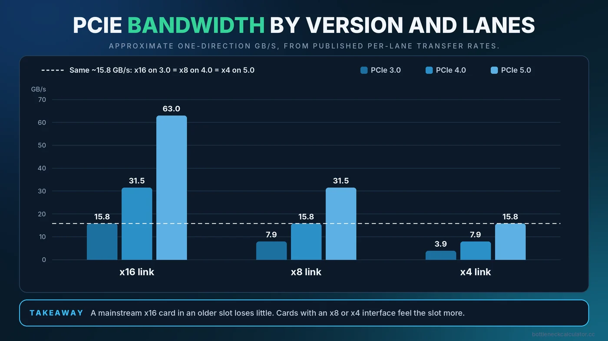
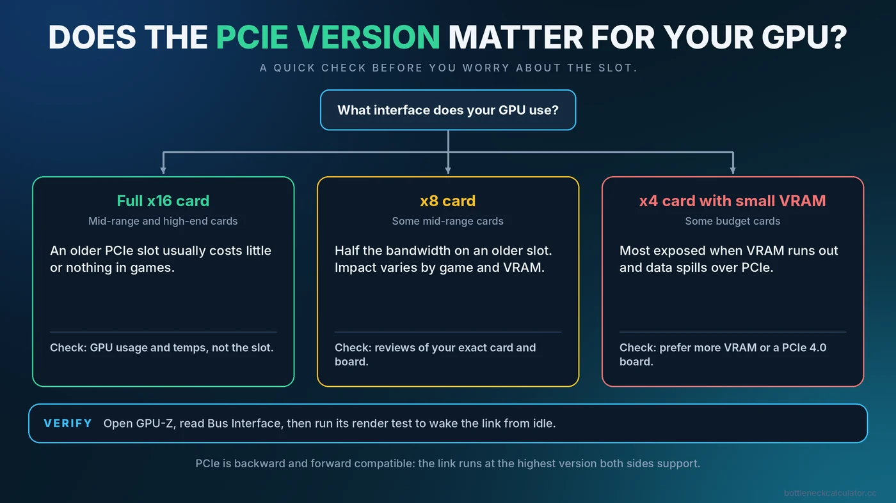

PCIe 3.0 vs 4.0 vs 5.0: Does the PCIe Version Bottleneck Your Graphics Card?
You just found out your motherboard has a PCIe 3.0 slot and your new graphics card supports PCIe 4.0 or 5.0. Is the slot holding the card back? For most people the answer is no, but there are specific cards and situations where the connection genuinely matters. This guide explains how to tell which one you are in.

Short Answer: Usually No, With a Few Important Exceptions
PCIe is the connection between your graphics card and the rest of the system. Each new version doubles the bandwidth per lane, but a typical gaming graphics card does not use all of the bandwidth of a full x16 connection. That is why putting a mainstream card with a full x16 interface into an older slot usually costs little or nothing in games.
The exceptions are cards with a narrower interface (x8 or x4), especially those with limited video memory. On an older slot, they have less bandwidth to move data when video memory runs short, and the effect can be visible. Knowing your card's interface is therefore more useful than comparing PCIe version numbers alone.
What PCIe Versions and Lanes Mean
PCIe bandwidth depends on two things: the version (generation) and the lane count. A full-length graphics slot is typically x16, meaning 16 lanes. The table shows approximate one-direction bandwidth, rounded from the published per-lane transfer rates.
| Link | PCIe 3.0 | PCIe 4.0 | PCIe 5.0 |
|---|---|---|---|
| x16 | about 15.8 GB/s | about 31.5 GB/s | about 63 GB/s |
| x8 | about 7.9 GB/s | about 15.8 GB/s | about 31.5 GB/s |
| x4 | about 3.9 GB/s | about 7.9 GB/s | about 15.8 GB/s |
The important pattern: an x8 card on PCIe 4.0 has the same bandwidth as an x16 card on PCIe 3.0. PCIe is also backward and forward compatible, so a PCIe 4.0 card works in a 3.0 slot and the other way around. The connection simply negotiates the highest version that both sides support.
When the PCIe Version Can Matter
Cards with an x8 or x4 interface
Several budget and mid-range graphics cards use fewer lanes to save cost. Examples include some cards in the RTX 4060 and RX 7600 classes, which use an x8 interface, and the Radeon RX 6500 XT, which uses x4. Check the manufacturer's specification page for the exact number for your card. On a PCIe 4.0 or newer board, these cards have the bandwidth they were designed for. In a PCIe 3.0 slot, they have half of it.
Low video memory
When a game needs more VRAM than the card has, data spills over to system memory across the PCIe connection. A narrow link makes that spill slower. The RX 6500 XT with 4GB of VRAM is a well-known example of a card where an older slot can hurt. If your card has plenty of VRAM for your settings, the slot matters less. See how much VRAM you need for gaming to check your headroom.
Wrong slot or shared lanes
Not every long slot on a motherboard runs at full speed. A second x16-sized slot is often wired for x4 and connects through the chipset. M.2 drives can also share lanes with certain slots. If your card is in the wrong slot, you lose bandwidth for no good reason.
Where PCIe Does Not Matter
- A mainstream x16 card in an older slot. Reviewers who compare slot generations on full x16 cards typically find small differences in games. Results vary by title and card, so look for tests of your exact model if the decision is expensive.
- Frame rate problems caused by the CPU or GPU. If your usage numbers show the CPU or GPU maxed out, the slot is not the cause. Start with the CPU vs GPU bottleneck guide.
- PCIe 5.0 storage. A faster SSD slot does not improve gaming frame rate. See our storage bottleneck guide for what drives really change.
How to Check Your Graphics Card's Link Speed
- Open GPU-Z. Look at the Bus Interface field, which shows what the card supports and what it is currently using, for example PCIe x16 4.0 at x16 4.0.
- Do not panic about low idle values. At idle, the link often drops to a lower speed to save power. GPU-Z shows this as something like x16 4.0 at x16 1.1.
- Run the render test. Click the question mark next to Bus Interface and start the test. The current link should rise to the full speed while the test runs.
- Check the BIOS if it stays low. Some boards let you set the slot to Auto or to a specific generation. Make sure it is not locked to a lower one.
Troubleshooting a Link Running Below Its Potential
- Confirm the card sits in the top graphics slot, the one wired directly to the CPU.
- Reseat the card firmly and check that the retention clip is fully locked.
- If you use a riser cable, try without it. Poor-quality risers can force a lower speed. If the card must stay on a riser, setting the slot to a lower generation in the BIOS can restore stability.
- Check your motherboard manual for lane sharing with M.2 drives.
- Update the BIOS, which sometimes fixes link negotiation problems.

Does This Change What You Should Buy?
If you own a PCIe 3.0 board and want a mainstream card with a full x16 interface, the slot should not rule it out. The bigger question is usually whether your CPU can keep up, which our CPU and GPU pairing guide addresses. If you are considering a budget card with an x8 or x4 interface on an older board, check reviews that tested that exact combination, and consider a card with more VRAM. For a broader view of limits across the whole system, read about the different types of PC bottlenecks and run your build through our upgrade checklist.
A Note on Resizable BAR
Resizable BAR (sometimes called Smart Access Memory on AMD systems) is a separate feature. It lets the CPU access the graphics card's memory in larger chunks. It needs support in the BIOS, the graphics card and the driver, and its effect varies by game, from none to a small gain. It is worth checking that it is enabled on supported systems, but it is not a replacement for a faster slot.
Conclusion
PCIe 3.0, 4.0 and 5.0 matter far less than their bandwidth figures suggest for a standard x16 graphics card. They matter more for cards with narrower interfaces and small VRAM, and when the card is in the wrong slot. Check your card's lane count, verify the link with GPU-Z, and then use the free Bottleneck Calculator to see whether the CPU and GPU are balanced.
Frequently Asked Questions
Will a PCIe 4.0 graphics card work in a PCIe 3.0 slot?
Yes. PCIe is backward compatible, so the card runs at the highest version that both the card and slot support. Performance impact depends on the card and the game.
Does PCIe 3.0 bottleneck an RTX 4060 or RX 7600?
These cards use an x8 interface, so a PCIe 3.0 slot gives them half the bandwidth of a PCIe 4.0 slot. The effect varies by game and by how much VRAM is needed, so check reviews for your exact setup.
Is PCIe 5.0 needed for gaming?
No. Current graphics cards do not need the bandwidth of a PCIe 5.0 x16 link to run games well. It is more of a future-proofing feature than a requirement.
How do I check if my GPU is running at x16?
Open GPU-Z and read the Bus Interface field. Run the render test to wake the link from its idle power-saving state, then confirm the current lanes and version.
Does the motherboard PCIe version matter if my card is x16?
Usually very little. A standard x16 card on an older PCIe version often loses only a small amount of performance, if any, in most games.